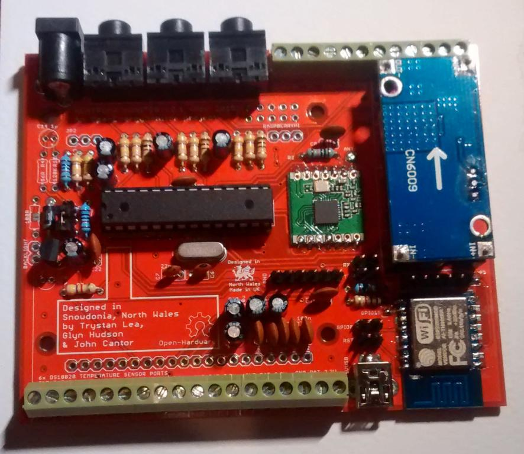

Over the last few months I've been working on a dedicated heatpump monitoring board with John Cantor who I have been working with for some time on heatpump monitoring. Earlier this year we documented a basic MBUS reader for reading Kamstrup heat meters http://openenergymonitor.org/emon/node/1944. This board builds on that work, integrating the MBUS reader circuitry into a board that also features standard OEM electricity monitoring, DS18B20 temperature sensing and more.
I recently installed an air source heatpump at home which was an added impetus to get this done and is providing an ideal testing setup.
I've written a longer blog post about this work here: http://openenergymonitor.blogspot.co.uk/2015/12/heat-pump-monitoring.html
The board is currently going through initial testing. The design is on github here: https://github.com/openenergymonitor/Hardware/tree/master/HeatpumpMonitor
It features:
- MBUS reader for Kamstrup heat meters
- CT current and AC/AC voltage based electricity monitoring
- Pulse counting
- Analog inputs for Vortex Flow Sensor (VFS) option (e.g Grundfos, Sika)
- 6 individually broken out DS18B20 temperature sensor connections
- Arduino ATmega328 core
- Connectivity options: ESP-12 WIFI, RaspberryPI header, RFM69
- LCD display connector.
Here's a picture of it:

If you're interested in the heat pump monitoring board, please get in contact. Drop me an email on: trystanlea@openenergymonitor.org or post here. I'll also try and post the initial results showing the operation and performance of my heatpump at home.
Re: Heatpump Monitoring board MBUS, ESP12++
Very interesting!
So if i understand correctly, I can couple this board to a raspberry pi and create a setup like emonpi?
Are you guys thinking of building enclosures combining the two?
Looking forward to your results and implementation.
Re: Heatpump Monitoring board MBUS, ESP12++
Thanks Beire, you can probably couple this with a Pi zero and it will still fit in the emontx v3 case. Then you could either use a usb to ethernet or usb to wifi adapter on the pi zero. I will try testing that soon.
Re: Heatpump Monitoring board MBUS, ESP12++
Very nice project !!
For me it would be interesting to know how to interface Arduino to mbus ( some heat meters and flow meters use this standard )
I never found any reference to do that.
Ciao,
Fabrizio.
.